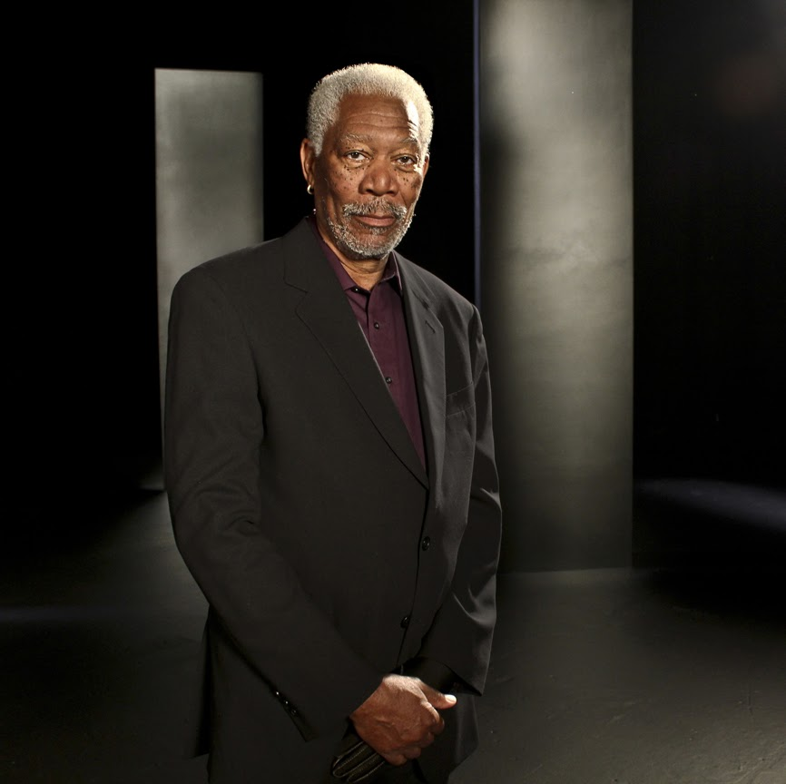

<!DOCTYPE html>
<html lang="en">
<head>
    <meta charset="utf-8">
    <title>Freeman</title>
    <style>
        span { background-color:red}
</head>
<body>
    <section>
    <h1>Morgan Freeman</h1>
    <h2>Biography</h2>
    <h2 style="color:green";>Fimography by year</h2>
    <ol>
        <li>Shawshank redemption (1994)</li>
        <li>Seven (1995)</li>
        <li>Driving Miss Daisy (1989)</li>
        <li>Million Dollar Baby (2004)</li>
    </ol>
    <h2>Fimography by year</h2>
    <ul>
        <li>Shawshank redemption (1994)</li>
        <li>Seven (1995)</li>
        <li>Driving Miss Daisy (1989)</li>
        <li>Million Dollar Baby (2004)</li>
    </ul>
    <table border="1px">
        <thead>
            <tr>
                <th>Movie name</th>
                <th>Year</th>
            </tr>
        </thead>
        <tbody>
            <tr>
                <td>Shawshank redemption</td>
                <td>1994</td>
            </tr>
            <tr>
                <td>Seven</td>
                <td>1995</td>
            </tr>
            <tr>
                <td>Driving Miss Daisy</td>
                <td>1989</td>
            </tr>
            <tr>
                <td>Million Dollar Baby</td>
                <td>2004</td>
            </tr>
        </tbody>
    </table>
    <div class"one">
    
    
    <p>
        With an authoritative voice and calm demeanor, this ever popular American actor has grown into one of the most respected figures in modern US cinema. Morgan was born on June 1, 1937 in Memphis, Tennessee, to Mayme Edna (Revere), a teacher, and <span>Morgan Porterfield Freeman</span>, a barber. The young Freeman attended Los Angeles City College before serving several years in the US Air Force as a mechanic between 1955 and 1959. His first dramatic arts exposure was on the stage including appearing in an all-African American production of the exuberant musical Hello, Dolly!.
    </p>
    <div>
    <div>
        
    </div>
    </section>
    <section>
        <p>
        Freeman first appeared on TV screens as several characters including <strong>"Easy Reader"</strong>, <strong>"Mel Mounds"</strong> and <strong>"Count Dracula"</strong> on the Children's Television Workshop (now Sesame Workshop) show The Electric Company (1971). He then moved into feature film with another children's adventure, Who Says I Can't Ride a Rainbow! (1971). Next, there was a small role in the thriller Blade (1973); then he played <em>Casca</em> in Julius Caesar (1979) and the title role in <strong>Coriolanus</strong> (1979). Regular work was coming in for the talented Freeman and he appeared in the prison dramas Attica (1980) and Brubaker (1980), Eyewitness (1981), and portrayed the final 24 hours of slain Malcolm X in Death of a Prophet (1981). For most of the 1980s, Freeman continued to contribute decent enough performances in films that fluctuated in their quality. However, he really stood out, scoring an <a href="http://oscar.go.com/">Oscar</a> nomination as a merciless hoodlum in Street Smart (1987) and, then, he dazzled audiences and pulled a second Oscar nomination in the film version of <a href="https://www.rottentomatoes.com/m/driving_miss_daisy">Driving Miss Daisy</a> (1989) opposite <a href="http://www.imdb.com/name/nm0001788/">Jessica Tandy</a>. The same year, Freeman teamed up with youthful Matthew Broderick and fiery Denzel Washington in the epic Civil War drama <a href="../html/pages/glory.html" target="_blank">Glory</a> (1989) about freed slaves being recruited to form the first all-African American fighting brigade.
        </p>
    </section>
    <h2>Recent Work</h2>
    <p>
        Recently, Freeman appeared in <a target=_blank href="https://www.rottentomatoes.com/m/red">RED (2010)</a>, a surprise box-office hit; he narrated the Barbar Conan (2011) remake, starred in Rob Reiner's The Magic of Belle Isle (2012); and capped the Batman trilogy with Temný rytír povstal (2012). Freeman has several films upcoming, including the thriller Podfukári (2013), under the direction of Louis Leterrier, and the science fiction actioner Nevedomi (2013), in which he stars with Tom Cruise.
    </p>
    <h4>Author of Biography</h4>
    <p>
        IMDb Mini Biography By: firehouse44@hotmail.com
    </p>
</body>
</html>
